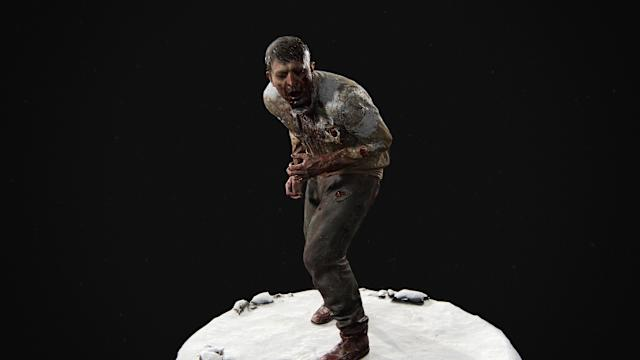
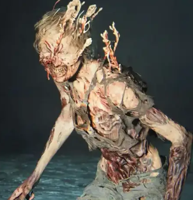
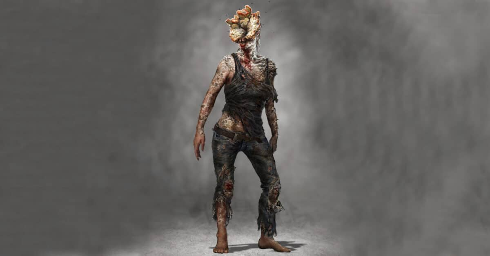
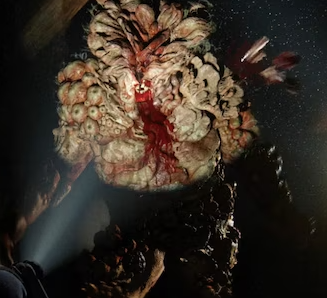

Etapa 1: Corredores

Durante esta fase, el hongo comienza a invadir el cerebro,
alterando el comportamiento del huésped. Los Corredores muestran
una rabia descontrolada, atacan sin pensar y suelen moverse en
grupos, lo que los hace especialmente peligrosos en espacios
cerrados. Su piel comienza a mostrar signos de inflamación,
heridas abiertas y decoloración, pero aún no presentan las
deformaciones fúngicas visibles de etapas posteriores.
A nivel biológico, el huésped sufre espasmos musculares, pérdida
de coordinación y deterioro mental severo. Aunque conservan cierta
movilidad y visión, su conciencia está prácticamente anulada.
Gritan, gimen y se comportan de forma errática, como si estuvieran
atrapados en su propio cuerpo. Esta etapa dura pocos días, pero es
crítica: el infectado puede propagar esporas o transmitir la
infección por mordedura.
Los Corredores representan el terror inmediato del contagio.
Aunque son los más débiles físicamente, su velocidad y número los
convierten en una amenaza letal para los sobrevivientes.
NIVEL DE RIESGO: MEDIO
Usa fuego, dispara a la cabeza, evita espacios cerrados, mantén
silencio, crea distracciones, nunca vayas solo, y actúa rápido.
Etapa 2: Acechadores

En esta fase, el hongo ha comenzado a deformar el cuerpo del
huésped, pero no completamente. Los Acechadores presentan placas
fúngicas visibles en la piel, especialmente en el rostro y
extremidades, aunque aún conservan cierta movilidad y visión. Su
comportamiento es más táctico: se esconden en la oscuridad,
esperan el momento oportuno y atacan por sorpresa. Esta capacidad
de emboscada los convierte en enemigos impredecibles y peligrosos.
A diferencia de los Corredores, los Acechadores son más
silenciosos y calculadores. Emiten sonidos guturales bajos y se
mueven con cautela, lo que dificulta detectarlos. Su agresividad
sigue presente, pero está modulada por una estrategia más
depredadora. El dolor físico y la pérdida de humanidad son
evidentes, lo que les da un aspecto perturbador y trágico.
La etapa del Acechador representa una transición entre la rabia
descontrolada y la deformación total. En combate, requieren
atención especial: es vital usar el sigilo, detectar sus
escondites y evitar ser sorprendido. Aunque no tan fuertes como
los Chasqueadores, su astucia los convierte en una amenaza
constante.
NIVEL DE RIESGO: MEDIO-ALTO
Usa sigilo, escucha sus movimientos, lanza botellas para
distraer, ataca por sorpresa, evita rincones oscuros, mantén
distancia segura.
Etapa 3: Chasqueadores

En esta fase, el hongo ha tomado control total del cuerpo del
huésped. El rostro está cubierto por placas fúngicas endurecidas
que se abren como pétalos, lo que impide la visión. Para
compensar, los Chasqueadores desarrollan un sistema de
ecolocalización: emiten chasquidos característicos que les
permiten detectar sonidos y ubicar a sus presas. Su piel está
desgarrada, con hongos brotando por todo el cuerpo, y su
comportamiento es completamente salvaje.
Son extremadamente peligrosos: un solo golpe puede matar al
jugador, y su resistencia física es mucho mayor que en etapas
anteriores. Se mueven lentamente, pero con precisión, guiados por
el sonido. Su presencia genera una tensión constante, ya que
cualquier ruido puede atraerlos. En combate, se recomienda usar
sigilo, armas silenciosas o distracciones para evitar
enfrentamientos directos.
Los Chasqueadores representan la pérdida total de humanidad. Ya no
hay conciencia ni rasgos humanos reconocibles. Son una
manifestación pura del hongo, diseñada para cazar y propagar la
infección.
NIVEL DE RIESGO: MUY ALTO
Muévete en silencio, usa armas cuerpo a cuerpo, lanza
distracciones, evita ruidos, ataca por detrás, mantén distancia,
nunca corras.
Etapa 4: Gordinflones

Los Gordinflones aparecen en climas secos. Son infectados masivos,
lentos pero increíblemente resistentes. Su cuerpo está cubierto
por gruesas capas de hongos endurecidos que actúan como armadura.
Pueden lanzar bombas de esporas que causan daño por área y cegar
temporalmente. Su fuerza física es brutal, capaces de matar con un
solo golpe. Aunque su movilidad es limitada, su capacidad de
absorción de daño los convierte en enemigos formidables.
Por otro lado, los Tambaleantes surgen en ambientes húmedos. Su
cuerpo está más blando y descompuesto, con hongos que emiten nubes
de ácido corrosivo. Son menos resistentes que los Gordinflones,
pero su ataque químico puede dañar a distancia y obligar al
jugador a moverse constantemente.
Ambos tipos representan la pérdida total de humanidad y la fusión
completa con el hongo. En combate, se recomienda usar fuego,
explosivos y mantener la distancia. Enfrentarlos directamente es
extremadamente peligroso.
NIVEL DE RIESGO: EXTREMADAMENTE ALTO
Usa lanzallamas, bombas caseras, mantén distancia, evita
espacios cerrados, apunta a zonas blandas, nunca los enfrentes
sin preparación.